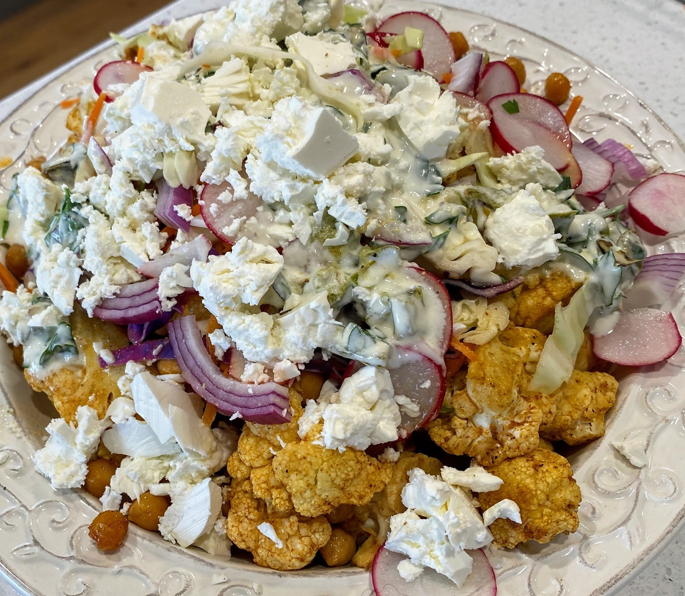

Cauliflower Chickpea Salad
 Meat
Meat

- 2 garlic cloves
- 2/3 cup olive oil
- 1/2 cup greek yoghurt
- 2 tbsp parsley
- 1 tsp ground cumin
- 1 tsp ground paprika
- 1 large cauliflower, cut into large florets
- 400g can of chickpeas, rinsed and drained
- 1/4 cup lime juice
- 1 tsp Dijon mustard
- 1 tsp honey
- 2 cups cut coleslaw
- 1/4 red onion, thinly sliced
- 100g Danish style feta, crumbled
- 2 radishes, sliced
Preheat grill, cook garlic under grill Peel garlic and finely chop Add garlic to yoghurt with 2 tbs of water, stir and place in fridge Preheat oven to 230 degrees Combine cumin, paprika, 1/4 cup of olive oil, salt and pepper Add cauliflower and chickpeas and cook with mxture Roast for 15 mins Whisk lime juice, mustard, honey and rwemainig oil. Spread sour cream mixture over base of bowl Sprinkle coleslaw and onion mixture Top with cauliflower, chickpeas. Drizzle with lime juice mixture Top with feta and radish to serve